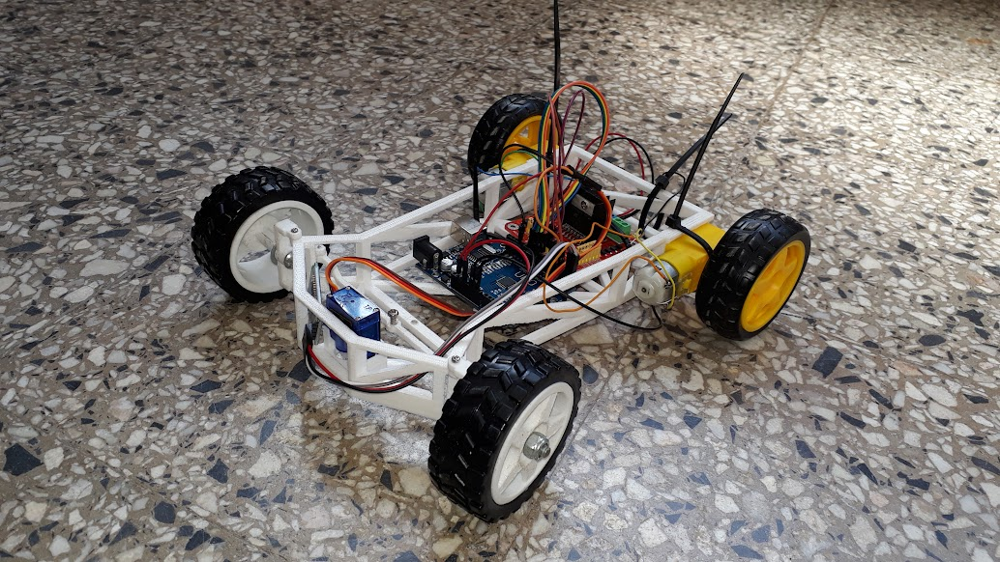

Robot autonomo
Es un pequeño prototipo que tiene la habilidad se escanear su alrededor para estacinarse de manera autonoma.

Es un pequeño prototipo que tiene la habilidad se escanear su alrededor para estacinarse de manera autonoma.
Es un brazo robot programable con la capacidad de repetir continuamente el proceso que se le asigna, puede ser programado tanto por lineas de comando como mediante una aplicacion de manera sencilla solo indicando que movimiento debe hacer mediante botones .
Es un proyecto donde mediante lo ludico hacemos la introduccion a la electronica donde los alumnos del ciclo basico participan del torneo y el ciclo superior va aprendiendo las distintas partes.
La programación es un campo apasionante que involucra la creación de software, aplicaciones y sistemas informáticos. En Argentina, esta disciplina ha experimentado un crecimiento significativo en los últimos años, y su relevancia sigue en aumento. Veamos qué implica aprender programación y cuáles son las perspectivas laborales en el país.
¿Qué es la programación?
La programación es el proceso de escribir instrucciones para que una computadora realice tareas específicas. Estas instrucciones se escriben en lenguajes de programación como Python, Java, C++ o JavaScript. Los programadores diseñan, desarrollan y mantienen aplicaciones, sitios web, sistemas operativos y mucho más.
¿Qué aprenderás?
Lenguajes de programación: Aprenderás a escribir código en uno o varios lenguajes. Cada lenguaje tiene sus propias características y aplicaciones.
Algoritmos y estructuras de datos: Comprenderás cómo resolver problemas de manera eficiente utilizando algoritmos y estructuras de datos.
Salida laboral en Argentina:
Demanda creciente: Las empresas buscan programadores para desarrollar software, aplicaciones móviles y sitios web
Startups y emprendimientos: El ecosistema emprendedor en Argentina está en auge, y muchas startups necesitan programadores
Industria tecnológica: Grandes empresas tecnológicas tienen presencia en el país y requieren profesionales de IT.
Freelance y trabajo remoto: Muchos programadores trabajan de forma independiente o para empresas extranjeras desde Argentina.
La electrónica es un campo apasionante que abarca el diseño, desarrollo y mantenimiento de componentes, dispositivos y sistemas electrónicos. En Argentina, la formación en electrónica ofrece oportunidades emocionantes y diversas. A continuación, te presento lo que los estudiantes aprenderán y las posibles salidas laborales:
Formación en Electrónica:
Técnico en Electrónica: El programa de formación capacita a los estudiantes para:
Proyectar componentes y equipos electrónicos.
Realizar ensayos y mediciones eléctricas y electrónicas.
Operar dispositivos y equipos electrónicos.
Realizar mantenimientos preventivos y correctivos.
Montar dispositivos y componentes.
Instalar productos y equipos electrónicos.
Asesorar y comercializar dispositivos electrónicos.
Generar emprendimientos en electrónica.
Los criterios incluyen seguridad, cuidado del ambiente y calidad.
Salida Laboral:
Automatización Industrial: Diseñar y mantener sistemas automatizados.
Telecomunicaciones: Trabajar en redes y sistemas de comunicación.
Electrónica de Consumo: Desarrollar dispositivos electrónicos para el público.
Emprendimientos Propios: Crear proyectos electrónicos independientes.